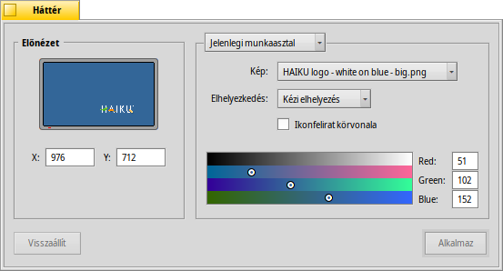

Magyar
Magyar Català
Català Deutsch
Deutsch English
English Español
Español Français
Français Italiano
Italiano Polski
Polski Português
Português Português (Brazil)
Português (Brazil) Română
Română Slovenčina
Slovenčina Suomi
Suomi Svenska
Svenska 中文 ［中文］
中文 ［中文］ Русский
Русский Українська
Українська 日本語
日本語 Hátterek (Backgrounds)
Hátterek (Backgrounds)
| Asztalsáv: | ||
| Útvonal: | /boot/system/preferences/Backgrounds | |
| Bellítások: | ~/config/settings/system/app_server/workspaces ~/config/settings/Backgrounds settings - az ablak pozícióját tartalmazza |
A munkaasztalok illetve mappák háttérszínét vagy a háttérképét módosíthatjuk.
A felső menüben kiválaszthatjuk, hogy az aktuális munkaasztalra, az összes munkaasztalra, a megadott mappára vagy az összes új mappára legyenek érvényesek a beállítások.
Az alatta lévő menüben megadható maga a háttérkép, vagy válasszuk a opciót, ha egyszerűen csak egy színt szeretnénk használni. A képet egyszerűen bele is dobhatjuk az előnézeti ablakba.
Háttérkép esetén a kép elhelyezkedését is megadhatjuk:
| Saját magunk adjuk meg a kép pozícióját. A kép a bal oldali kis képernyőn is mozgatható, vagy megadhatjuk a pontos X és Y pozíciót. | ||
| A kép a képernyő közepén jelenik meg. | ||
| A képet a képernyő méretére méretezve tölti ki a háttérben. A méretarány nem feltétlenül marad meg. | ||
| A kép ismétlésével tölti ki a hátteret. |
Az t bejelölve vékony körvonal kerül az ikonok feliratának köré.
Az ikon felirat szövege fekete vagy fehér színű a kiválasztott háttérszín függvényében. A sötétebb színek esetén fehér, a világosabb színek esetén fekete lesz. Tehát, ha nagyon fényes/világos háttérképet választunk, akkor a háttér színét is állítsuk világosra, hogy az ikonok felirata olvasható legyen. (Vagy egyszerűen csak jelöljük be a jelölőnégyzetet.)
A kiválasztott szín a Munkaasztalokon is megjelenik, azonban a háttérkép nem.
| A panel megnyitásakori állapot vsszaállítása. | ||
| A beállítások véglegesítése. |